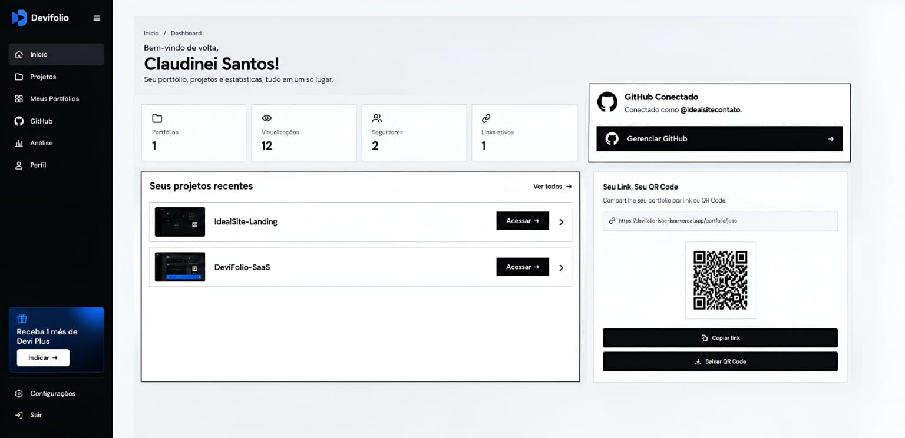

Seu trabalho já existe.
Comece pelos repositórios que você mantém no GitHub, sem cadastrar tudo do zero.
+20 desenvolvedores já usam a DeviFolio.
Mostre seus projetos e habilidades de forma simples,
profissional e sem complicação.

Repositórios mostram o código. A DeviFolio mostra o que você construiu, por que importa e onde encontrar cada projeto — tudo em um endereço profissional.
Comece pelos repositórios que você mantém no GitHub, sem cadastrar tudo do zero.
Revise descrição, imagem, tecnologias e links antes de publicar cada projeto.
Reúna perfil e projetos em uma página pronta para currículo, LinkedIn e conversas profissionais.
Autorize sua conta e escolha os repositórios que representam seu trabalho.
Confira o conteúdo reunido e personalize os detalhes antes de publicar.
Apresente tudo em um link público ou no QR Code gerado para seu perfil.
Importe seus repositórios, decida o que merece destaque e mantenha a apresentação sob seu controle.
Criar minha contaVocê pode começar com o endereço do seu perfil e continuar no cadastro.
Cole o link e continue.Escolha o que entra no seu portfólio e dê a cada projeto uma apresentação que faça sentido para quem visita.
Foto, apresentação, projetos publicados e links profissionais em um só lugar.
O mesmo endereço para compartilhar online ou mostrar em materiais impressos.
Acompanhe as visualizações do seu portfólio e as interações com seus links.
Depoimentos fictícios para ilustrar a experiência.
Não. Você conecta o GitHub e escolhe os repositórios que quer importar. Depois, revisa as informações reunidas.
Crie sua conta, escolha seus projetos e dê a eles um lugar à altura do trabalho que você colocou em cada um.
Criar conta grátis